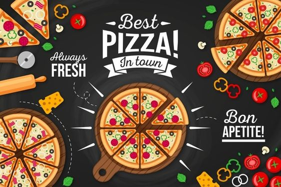
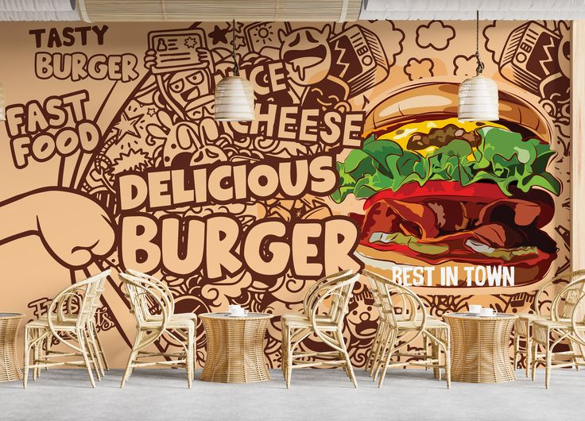

Cafe Lueur sets you in a typical bistro ambiance that characterises every great french city.
with its heartfelt hospitality and the quality of its traditional cuisine, cafe Lueur has attained loyal customer base.
The ambiance, flavourful dishes and wine here makes an ideal setting for converstaions, stories, and bonding.
Highly rated on review sites, blogs & other sovial media platfoprms.
CAFE LUEUR


Traditional Menu
Our brand strongly thrives on Authenticity of its french flavours
Seasonal menus as per the weather or any upcoming/ ongoing festivals, are always designed & integrated in order to capitalize on the specialties served globally during these periods
Our Seasonal Festive special menu includes - Thanksgiving menu, French Gastronomy, Christmas Menu, Celebration of Epiphany with our special Galette Cake
Weekly specials to keep the keep customers engaged throughout the week like - Chicken Cardon, Vegetarian Morocon Couscous, Grilled Sea Bass etc
Our Best Festive special menu includes - Chinease menu, German Gastronomy, Christmas Special Menu with delecious sandwich
Special Week to keep the customers enjoy throughout the week like - Chicken Cardon, Prawns Biryani, Veg Noodles, Chinease Specials
Our wine & dine experience offers a handpicked collection of wines for across the globe perfectly paired with finest quality of red meat and white meat.
A spectacular sit-down dining experience awaits every Saturday. with the likes of Lesely performing live and serenading you all night long., at our event Rendezvou
Margherita Pizza: A classic Italian pizza topped with fresh tomatoes, mozzarella cheese, and basil leaves. Simple, yet incredibly flavorful, it embodies the essence of Italian cuisine.
Spaghetti Carbonara Traditional Roman pasta made with eggs, cheese, pancetta, and pepper. This creamy and savory dish offers a delightful blend of flavors and a rich, comforting texture.
Caesar Salad A crisp and refreshing salad featuring romaine lettuce, croutons, Parmesan cheese, and Caesar dressing. Perfect as a starter or a light meal.
Sushi Platter An assortment of fresh sushi rolls, including tuna, salmon, and vegetable varieties. Each piece is a delicate balance of flavors and textures, showcasing the art of Japanese cuisine.
hicken Tikka Masala Tender chicken chunks marinated in spices and yogurt, then cooked in a creamy tomato-based sauce. This popular Indian dish is rich, aromatic, and pairs perfectly with naan or rice.